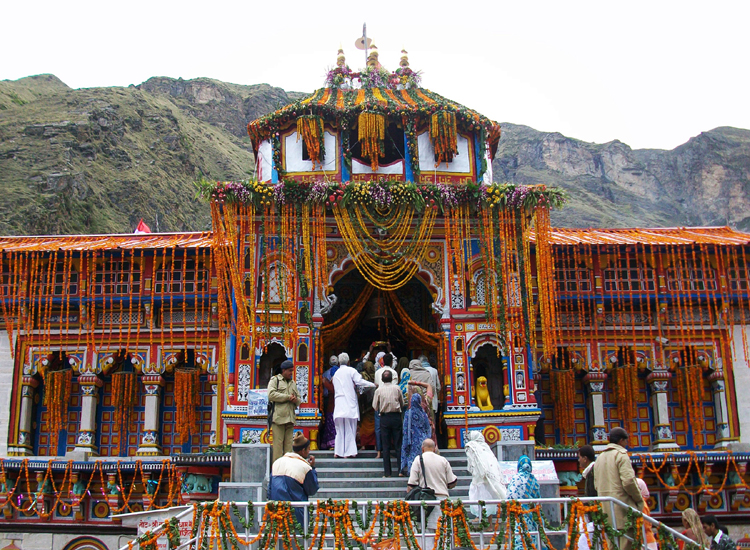
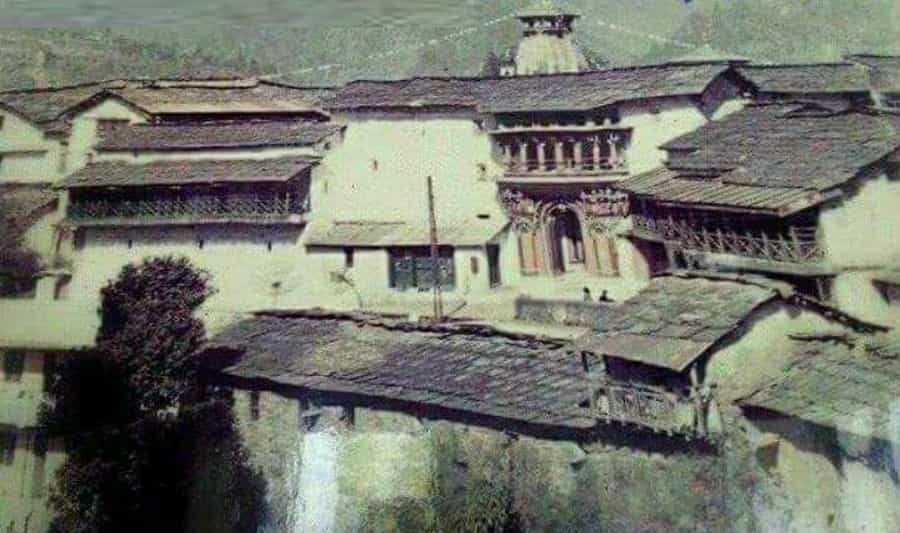
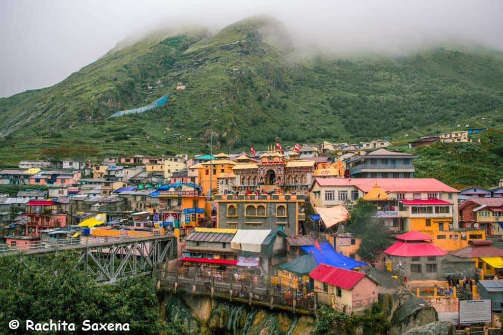
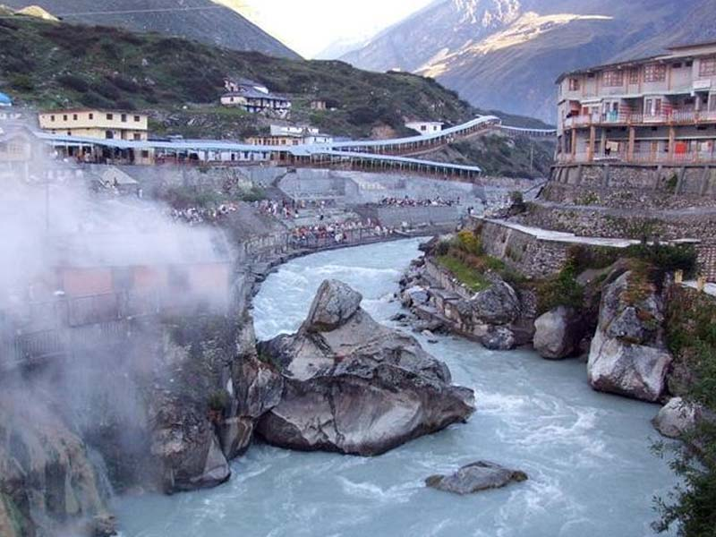
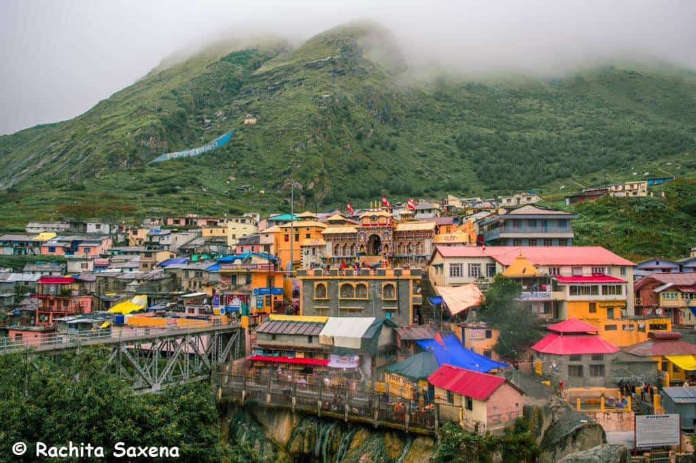
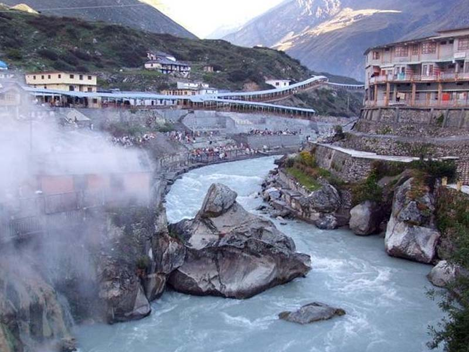
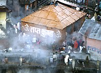
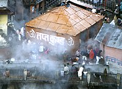

Introduction

The Badrinath Temple also known as the Badrinarayan Temple, located in Uttarakhand's Badrinath town, is one of
the Char Dhams (four important pilgrimages) in the state. There are four pilgrim-destinations namely
Yamunotri, Gangotri, Kedarnath, and Badrinath, collectively known as Char Dham. These pilgrimage centres draw large
number of pilgrims each year, thus becoming the most important hubs of religious travel in the whole of Northern
India. Badrinath is located at an elevation of around 3,100 m. Located in the Garhwal Himalayas, on the banks of the
Alaknanda river, this sacred town lies between Nar and Narayana mountain ranges. The temple is believed to
have been established by sage Adi Shankaracharya in the 8th century. With Lord Vishnu as its presiding deity, the
temple remains open for six months in a year. In winter it becomes inaccessible due to heavy snowfall.
Badrinath is a sacred Hindu shrine dedicated to Lord Vishnu, one of the principal deities in Hinduism. It is
located in the Chamoli district of Uttarakhand in northern India and is considered to be one of the holiest
Hindu shrines. The image of the presiding deity worshipped in the temple is a 1 ft (0.30 m), the black granite deity of
Vishnu in the form of Badrinarayan. The deity is considered by many Hindus to be one of eight svayam vyakta kshetras,
or self-manifested deities of Vishnu.[2] Mata Murti Ka Mela, which commemorates the descent of river Ganges on mother earth, is the most prominent
festival celebrated in the Badrinath Temple.
Although Badrinath is located in North India, the head priest, or
Rawal, is traditionally a Nambudiri chosen from the South Indian state of Kerala. The temple was included in the
Uttar Pradesh state government Act No. 30/1948 as Act no. 16,1939, which later came to be known as "Shri
Badarinath and Shri Kedarnath Mandir Act". The committee nominated by the state government administers both the
temples and has seventeen members on its board.
Devotees at the Badrinath Temple in October 2022
The temple is mentioned in ancient religious texts like Vishnu Purana and Skanda Purana. It is glorified in the
Naalayira Divya Prabandham, an early medieval Tamil canon of the Alvar saints from the 6th–9th centuries CE.
History of Badrinath Dham
Discover the rich history and legends associated with Badrinath Temple, dating back thousands of years.
Badrinath is a sacred Hindu shrine dedicated to Lord Vishnu, one of the principal deities in Hinduism. It
is located in the Chamoli district of Uttarakhand in northern India and is considered to be one of the
holiest Hindu shrines.
According to Hindu mythology, Lord Vishnu meditated in the area for thousands of years in the form of a
berry (Badri in Hindi), and the place came to be known as Badri-Vishal. It is said that the gods and
demons once approached Lord Vishnu to help them churn the oceans in search of the elixir of immortality.
Lord Vishnu agreed to help, but he insisted that he would only drink the first drop that emerged from the
ocean. The first drop was poison, and Lord Vishnu drank it to save the world from being destroyed. To save
himself from the effects of the poison, Lord Vishnu retreated to the mountains near Badrinath, where he
meditated and performed severe austerities.
Another popular legend associated with Badrinath is that Lord Vishnu chose the place as his abode and
appeared in the form of Lord Badrinath to bless his devotees. It is also said that Lord Vishnu’s consort,
Goddess Lakshmi, appeared in the form of a berry (badri) tree to protect her husband from the harsh mountain
weather. Hence, the place came to be known as Badrinath.

Architecture
The temple is located in Garhwal hill tracts along the banks of the Alaknanda River[3] in Chamoli district in Uttarakhand. The hill tracts are located 3,133 m (10,279 ft) above the mean sea level.[4][5] The Nar Parbat mountain is located opposite to the temple, while the Narayana Parbat is located behind the Neelkanth peak.[6] Adi Shankara established Badrinath as a pilgrimage site in the ninth century. The temple has three structures: the Garbhagriha (sanctum), the Darshan Mandapa (worship hall), and Sabha Mandapa (convention hall).[4][6][7] The conical-shaped roof of the sanctum, the garbhagriha, is approximately 15 m (49 ft) tall with a small cupola on top, covered with a gold gilt roof.[6][8] The facade is built of stone and has arched windows. A broad stairway leads up to the main entrance, a tall, arched gateway. Just inside is a mandap, a large, pillared hall that leads to the sanctum, or main shrine area. The walls and pillars of the hall are covered with intricate carvings.[2] The main shrine houses the 1 ft (0.30 m) Shaligram (black stone) deity of Badrinarayana, which is housed in a gold canopy under a Badri Tree. The deity of Badrinarayana shows him holding a Shankha (conch) and a Chakra (wheel) in two of his arms in a lifted posture and the other two arms resting on his lap in a Yogamudra (Padmasana) posture.[4][7] The sanctum also houses images of the god of wealth—Kubera, sage Narada, Uddhava, Nara and Narayana. There are fifteen more images that are also worshipped around the temple. These include that of Lakshmi (the consort of Vishnu), Garuda (the vahana of Narayan), and Navadurga, the manifestation of Durga in nine different forms. The temple also has shrines of Lakshmi Narasimhar and for saints Adi Shankara (788-820 CE), Nar and Narayan, Ghantakarna, Vedanta Desika and Ramanujacharya. All the deities of the temple are made of black stone.
Festivals and Celebrations
Experience the vibrant festivals celebrated at Badrinath Temple, including the annual Badri-Kedar Festival.
Gallery
 



 

Contact
Contact
For inquiries and further information, please contact us:
Email: info@badrinathtemple.com
Phone: +91-XXXXXXXXXX